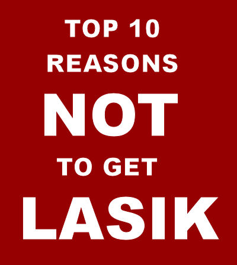

1. LASIK causes dry eye
Dry eye is the most common complication of LASIK. Corneal nerves that are responsible for tear production are severed when the flap is cut. Medical studies have shown that these nerves never return to normal densities and patterns. Symptoms of dry eye include pain, burning, foreign body sensation, scratchiness, soreness and eyelid sticking to the eyeball. The FDA website warns that LASIK-induced dry eye may be permanent. Approximately 20% of patients in FDA clinical trials experienced "worse" or "significantly worse" dry eyes at six months after LASIK.(1) In 2014, an FDA study found that up to 28% of patients with no symptoms of dry eyes before LASIK reported dry eye symptoms at three months after LASIK. Moreover, corneal nerve damage during LASIK may lead to a chronic pain syndrome known as corneal neuralgia.
2. LASIK results in loss of visual quality
LASIK patients have more difficulty seeing detail in dim light (loss of contrast sensitivity) and experience an increase in visual symptoms at night (halos, starbursts, glare, double vision/ghosting, ). A published review of data for FDA-approved lasers found that six months after LASIK, 17.5 percent of patients report halos, 19.7 percent report glare (starbursts), 19.3 percent report night-driving problems and 21 percent complain of eye dryness.(1) The FDA website warns that patients with large pupils may suffer from debilitating visual symptoms at night. In 2014, an FDA study found that up to 46% of patients who had no visual symptoms before surgery, reported at least one visual symptom at three months after surgery.
3. The cornea is incapable of complete healing after LASIK
The flap never heals. Researchers found that the tensile strength of the LASIK flap is only 2.4% of normal cornea.(2) LASIK flaps can be surgically lifted or accidentally dislodged for the remainder of a patient’s life. The FDA website warns that patients who participate in contact sports are not good candidates for LASIK.
LASIK permanently weakens the cornea. Collagen bands of the cornea provide its form and strength. LASIK severs these collagen bands and thins the cornea.(3) The thinner, weaker post-LASIK cornea is more susceptible to forward bulging due to normal intraocular pressure, which may progress to a condition known as keratectasia and corneal failure, requiring corneal transplant.
4. There are long-term consequences of LASIK
• LASIK affects the accuracy of intraocular pressure measurements,(4) exposing patients to risk of vision loss from undiagnosed glaucoma.
• Like the general population, LASIK patients will develop cataracts. Calculation of intraocular lens power for cataract surgery is inaccurate after LASIK.(5) This may result in poor vision following cataract surgery and exposes patients to increased risk of repeat surgeries. Ironically, steroid drops routinely prescribed after LASIK may hasten the onset of cataracts. In 2015, researchers reported that people who've had Lasik are having cataract surgery approximately 10 years earlier, on average, than people with the same axial lengths of the eye who have not had Lasik, and about 15 years earlier, on average, than the general population. Another study presented in 2015 found that people who have undergone LASIK have cataract surgery six years sooner than people who have not had LASIK.
• Research demonstrates persistent decrease in corneal keratocyte density after LASIK.(6) These cells are vital to the function of the cornea. Ophthalmologists have speculated that this loss might lead to delayed post-LASIK ectasia.
5. Bilateral simultaneous LASIK is not in patients’ best interest
In a 2003 survey of American Society of Cataract and Refractive Surgery (ASCRS) members,(7) 91% of surgeons who responded did not offer patients the choice of having one eye done at a time. Performing LASIK on both eyes in the same day places patients at risk of vision loss in both eyes, and denies patients informed consent for the second eye. The FDA website warns that having LASIK on both eyes at the same time is riskier than having two separate surgeries.
6. Serious complications of LASIK may emerge later
The medical literature contains numerous reports of late-onset LASIK complications such as loss of the cornea due to biomechanical instability, inflammation resulting in corneal haze, flap dislocation, epithelial ingrowth, and retinal detachment.(8) The LASIK flap creates a permanent portal in the cornea for microorganisms to penetrate, exposing patients to lifelong increased risk of sight-threatening corneal infection.(9) Complications may emerge weeks, months, or years after seemingly successful LASIK.
7. LASIK does not eliminate the need for glasses
Since LASIK does not eliminate the need for reading glasses after the age of 40 and studies show that visual outcomes of LASIK decline over time,(10) LASIK patients will likely end up back in glasses – sometimes sooner rather than later.
Imagine putting on an old, outdated pair of glasses. That's what LASIK vision is like years after surgery -- your old prescription is permanently lasered onto your corneas. It's like being stuck with an old pair of glasses of the wrong power.
8. The true rate of LASIK complications is unknown
There is no clearinghouse for reporting of LASIK complications. Moreover, there is no consensus among LASIK surgeons on the definition of a complication. The FDA allowed laser manufacturers to hide complications reported by LASIK patients in clinical trials by classifying dry eyes and night vision impairment as "symptoms" instead of complications.(1)
9. Rehabilitation options after LASIK are limited
LASIK is irreversible, and treatment options for complications are extremely limited. Hard contact lenses may provide visual improvement if the patient can obtain a good fit and tolerate lenses. The post-LASIK contact lens fitting process can be time consuming, costly and ultimately unsuccessful. Many patients eventually give up on hard contacts and struggle to function with impaired vision. In extreme cases, a corneal transplant is the last resort and does not always result in improved vision.
10. Safer alternatives to LASIK exist
It is important to remember that LASIK is elective surgery. There is no sound medical reason to risk vision loss from unnecessary surgery. Glasses and contact lenses are the safest alternatives.
References:
1. Bailey MD, Zadnik K. Outcomes of LASIK for myopia with FDA-approved lasers. Cornea. 2007 Apr;26(3):246-54.
2. Schmack I, Dawson DG, McCarey BE, Waring GO 3rd, Grossniklaus HE, Edelhauser HF. Cohesive tensile strength of human LASIK wounds with histologic, ultrastructural, and clinical correlations. J Refract Surg. 2005 Sep-Oct;21(5):433-45.
3. Jaycock PD, Lobo L, Ibrahim J, Tyrer J, Marshall J. Interferometric technique to measure biomechanical changes in the cornea induced by refractive surgery. J Cataract Refract Surg. 2005 Jan;31(1):175-84.
4. Cheng AC, Fan D, Tang E, Lam DS. Effect of Corneal Curvature and Corneal Thickness on the Assessment of Intraocular Pressure Using Noncontact Tonometry in Patients After Myopic LASIK Surgery. Cornea. 2006 Jan;25(1):26-28.
5. Wang L, Booth MA, Koch DD. Comparison of intraocular lens power calculation methods in eyes that have undergone laser-assisted in-situ keratomileusis. Trans Am Ophthalmol Soc. 2004;102:189-96.
6. Erie JC, Patel SV, McLaren JW, Hodge DO, Bourne WM. Corneal keratocyte deficits after photorefractive keratectomy and laser in situ keratomileusis. Am J Ophthalmol. 2006 May;141(5):799-809.
7. Leaming DV. Practice styles and preferences of ASCRS members--2003 survey. J Cataract Refract Surg. 2004 Apr;30(4):892-900.
8. MEDLINE database of citations and abstracts of biomedical research articles. PubMed
9. Vieira AC, Pereira T, de Freitas D. Late-onset infections after LASIK. J Refract Surg. 2008 Apr;24(4):411-3.
10. Zalentein WN, Tervo TM, Holopainen JM. Seven-year follow-up of LASIK for myopia. J Refract Surg. 2009 Mar;25(3):312-8.
